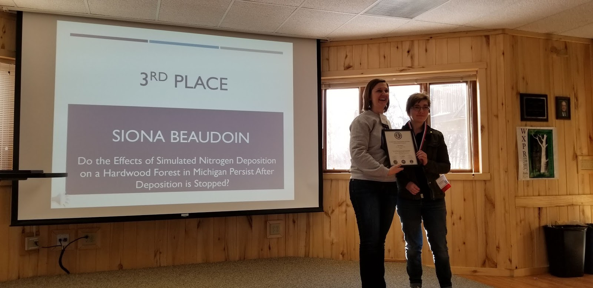
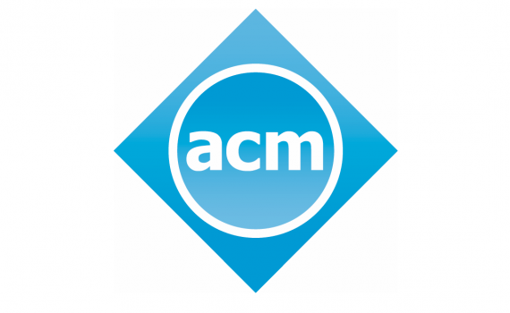
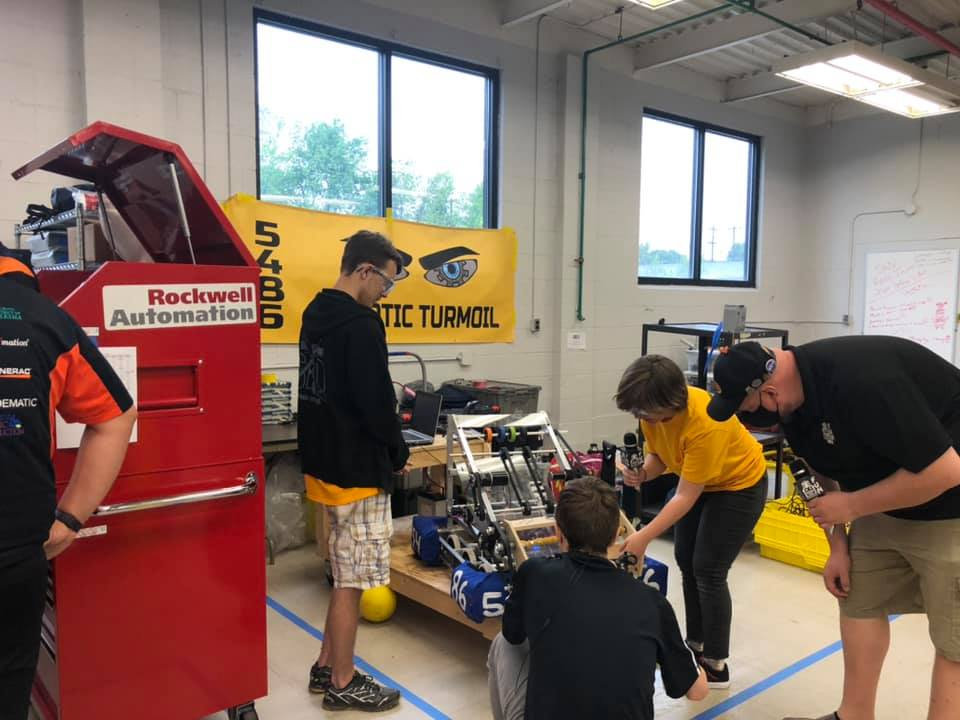
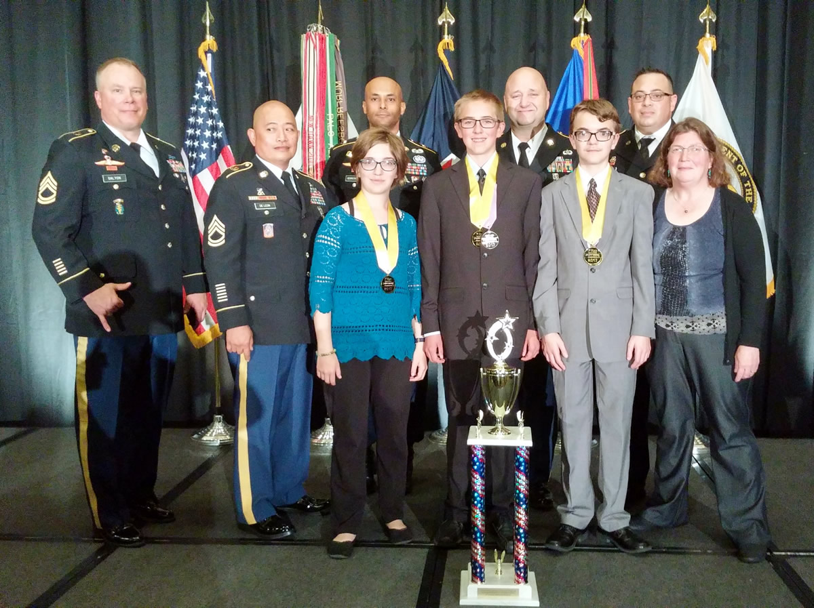

NASA Lunabotics
- Assisted in object detection using deep learning and collected / labeled image data.
- Engaged in community outreach by presenting to a FIRST Robotics team about our project.
Jan 2022 - May 2022

Junior Science and Humanities Symposium
- Conducted two research projects where I placed 3rd at the regional competition one Year and 3rd nationally another in the Life Science category.
June 2018 - May 2020

Association of Computing Machinery
- Current Vice President where I assist in the planning of weekly meetings and organizing events.
Sept 2021 - Present

Machine Learning Club
- Competed on a team at the FA2022 semester competition (12/09/2022) where my team won by having the highest accuracy for one of the problems.
Sept 2021 - Present

Google Developers Student Club
- Attended weekly machine learning workshops to engage in hands-on experience in image processing and various neural network techniques (primarily Convolutional Neural Network).
Sept 2022 - Present

FIRST Robotics
- Was the president of Lake Linden - Hubbell High School' team for two years where I led my team in the building of a robot that we competed with at two regional competitions each year.
Sept 2017 - May 2022

eCybermission
- Completed research projects on a team of 3 regarding the use of a mining waste, where we placed 1st in Michigan 3 years and 1st nationally 1 year.
- Was awarded a $5,000 community outreach research grant on the use of this mining waste.
Sept 2016 - Dec 2019